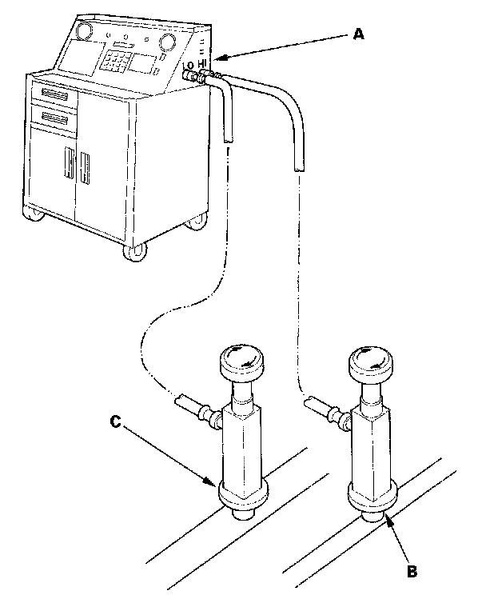

System Evacuation
System EvacuationCAUTION:
- Air conditioning refrigerant or lubricant vapor can irritate your eyes, nose, or throat.
- Be careful when connecting service equipment.
- Do not breathe refrigerant or vapor.
NOTE:
- If accidental system discharge occurs, ventilate work area before resuming service.
- Additional health and safety information may be obtained from the refrigerant and lubricant manufacturers.
1. When an A/C System has been opened to the atmosphere, such as during installation or repair, it must be evacuated using an R-134a refrigerant recovery/recycling/charging station. If the system has been open for several days, the receiver/dryer should be replaced, and the system should be evacuated for several hours.

2. Connect an R-134a refrigerant recovery/recycling/charging station (A) to the high-pressure service port (B) and the low-pressure service port (C), as shown, following the equipment manufacturer's instructions. Evacuate the system.
3. If the low-pressure does not reach more than 93.3 kPa (700 mmHg, 27.6 in.Hg) in 15 minutes, there is probably a leak in the system. Partially charge the system, and check for leaks.